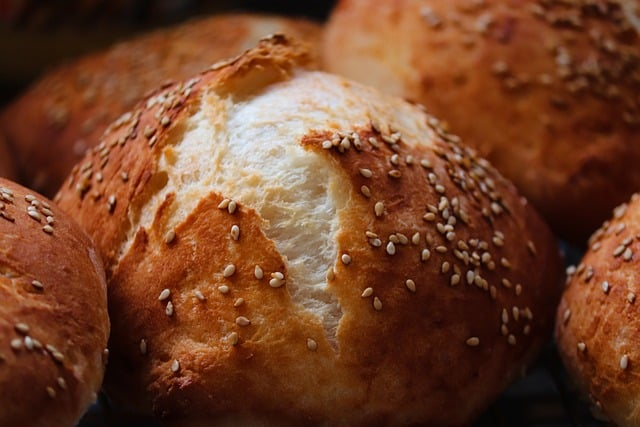

🥐Croissant 여러 겹으로 이루어져 있는 텍스처가 특징인 초승달 모양의 빵으로 페이스트리의 일종이다. [1]이름 역시 초승달(크루아상)을 닮았다고 하여 붙여졌다. 프랑스어 'croissant(초승달)'은 'croître(자라다)'의 현재분사이며, 영어에서 초승달을 뜻하는 'crescent'와 어원이 같다. 규범적 표기와는 별개로, 한국어 화자에게는 '크로아상', '크로와상', '크라상' 등으로 불리기도 한다.[2] 판상의 밀가루 반죽 안에 버터를 올려놓고 겹겹이 접어서 반죽-버터-반죽이 교차되는 층상 구조를 만든 뒤 삼각형으로 잘라서 돌돌 말아 초승달 모양으로 만든다. 잘 구워진 크루아상은 가볍고 속이 층상을 이룬다. 지방분이 많으면서도 짭짤해 유럽에서는 아침 식사로 많이 이용된다. 국내에서 판매되는 대부분의 크루아상은 윗면에 시럽을 발라 달콤한 맛을 낸다. 하루 정도 오래되어도 버터가 함유되어 있어 단면이 보이게 잘라서 기름 없이 약불에 구워만 내어도 맛있다. 유럽에서는 주로 프랑스와 스페인, 이탈리아에서 크루아상을 아침식사로 많이 먹으며, 대개 우유를 넣은 커피를 같이 마신다. 반면 독일, 북유럽 등지에서는 식문화가 크게 달라 호밀빵보다 수요가 적다. 튀르키예에서는 아이 최레이(Ay çöreği)라고 부르며 상당히 많이 즐겨 먹는다. 중국어로는 소뿔빵(牛角面包)이라고 불린다. 일본어로는 クロワッサン라 한다. 아르헨티나에서는 크루아상과 비슷한 메디아루나(Medialuna)가 존재한다. 한국에서 매우 사랑받는 프랑스빵이다. 튀김같은 식감에 단짠이 어우지는데다 크로플이 유행하여 수요가 크게 늘었고, 크룽지도 개발했을 정도다.
🍞bun 영국 식사의 주식으로 쓰는 둥그런 형태의 빵. 햄버거에 쓰는 빵이 대표적인 번[1]이다. 번도 여러 종류가 있는데 깨가 들어간 번, 옥수수 형태의 번, 모닝빵 번 등 여러 가지 번이 있다. 같은 형태의 유럽식 빵과 비교해서 다른 점이라면 주식으로 쓰는 빵이면서 고율배합[2]이라는 점. 미국식 식빵과 비슷하다. 빵 위에 깨나 비스킷 반죽 등을 올리기도 하며 속에 버터, 치즈, 크림 등을 넣기도 한다. 한국에서는 2000년대 후반부터는 모카번 등의 과자빵으로 더 익숙하다. 만두를 영어로 Meat Bun으로 표기하기도 한다.